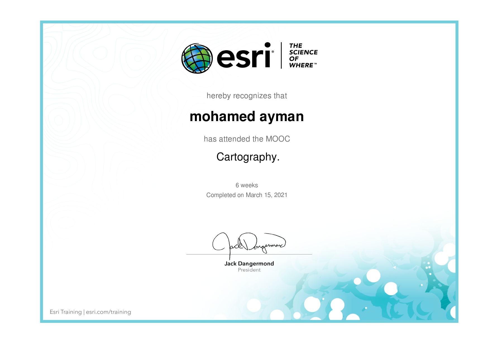
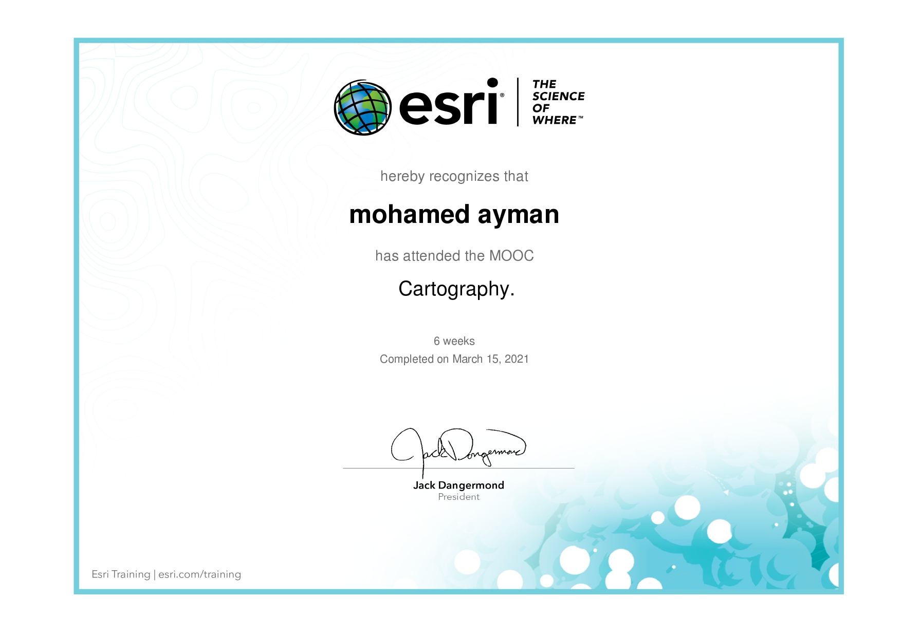

About me
I'm Mohamed, a GIS and Web Development Specialist passionate about spatial data analysis and innovative
technology solutions. I believe that data is not just numbers; it's a powerful tool that can drive
smarter decision-making in crucial fields like tourism, urban planning, and resource management.
I have experience in ArcGIS, Python, HTML, CSS, and JavaScript, and I always seek to integrate these
technologies into projects that contribute to sustainable development and smart solutions. My goal is to
bridge the gap between geospatial analysis and interactive web applications, creating platforms that
help stakeholders make more informed decisions.
Current Projects:
- Tourism Development Analysis in Egypt – utilizing GIS and AI to identify and enhance underutilized
tourism areas for sustainable growth.
- Change Detection in Egypt – applying remote sensing and geospatial technologies to analyze and
monitor land use changes for better urban planning and environmental management.
Always eager to explore new challenges and develop cutting-edge solutions that shape the future!
 

_page-0001.jpg)


.png)